从徐州出土文物出发
围绕编钟、铜钫、陶瓶、瓦当、画像石等真实考古线索展开，不做空泛国风包装。
Official Theme Launch
汉文化对紫砂器形制影响探析
以徐州出土汉代文物为实证原点，将考据成果转译为直观的视觉叙事，旨在溯源汉文化基因如何熔铸于紫砂艺术的造型骨架、纹饰语义与精神内核。
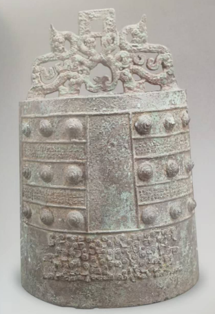
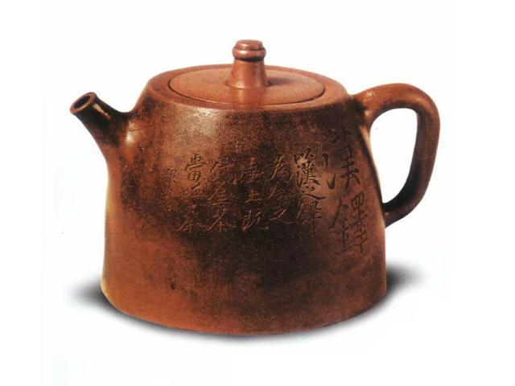
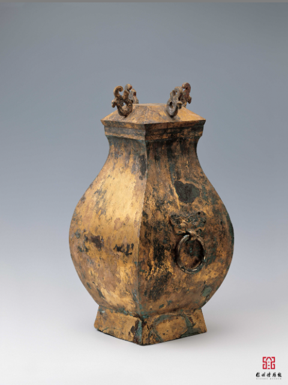
让汉代文物不只停留于考据，而是进入当代器物的结构、纹样与气韵。
Theme Brief
核心观点： 本次展览立足徐州汉代文物之实证，试图回答一个命题：汉文化如何全方位“熔铸”进紫砂壶的造型骨架、纹饰语义与精神气质。这种影响是跨越千年的全息渗透。从狮子山楚王陵的青铜礼器到汉画像石的流光溢彩，徐州的地下宝藏为紫砂艺术提供了丰厚的造型蓝本与精神内核。紫砂艺人以泥为媒，将汉代的“形”（几何构架）、“意”（图腾语义）、“神”（哲学气韵）有机内化。通过“仿器、铭意、载道”的艺术实践，两汉的雄浑气度与辩证哲学在方寸砂壶间寻获了最佳物理宿主，使其超越了器物本身，成为承载民族审美与文明记忆的独特符号。
围绕编钟、铜钫、陶瓶、瓦当、画像石等真实考古线索展开，不做空泛国风包装。
把“汉铎、汉钟、汉方、汉缾、汉瓦、半瓦”等器形转成页面里能被一眼记住的官宣重点。
用“天圆地方”“中庸和谐”“曲则全”建立主题高度，让展览既有文物根基，也有品牌气质。
Core Paths
仿器
编钟、铜钫、陶瓶、瓦当等汉代器物为紫砂壶提供了最直接的形制参照。它们不只是被“看见”，而是被重新组织为壶身比例、转折方式与结构张力。
铭意
“延年”“飞鸿延年”等瓦当吉语、车马出行的画像石场景、蜿蜒升腾的云气纹，被转写成紫砂壶表面的铭文、刻绘与整体气质。
载道
汉代宇宙观、儒家中和美学与道家辩证智慧，共同构成了紫砂壶超越实用功能的人文厚度，也使“汉风”从外形进入了器物之骨。
Artifact Pairing
礼乐重器
文档把徐州出土编钟与汉铎、汉钟一系紫砂器明确连接起来。高耸的甬部、饱满的鼓部以及庄严的比例感，被压缩、抽象并重新安放在茶器的壶身、壶腹与结构重心之中。
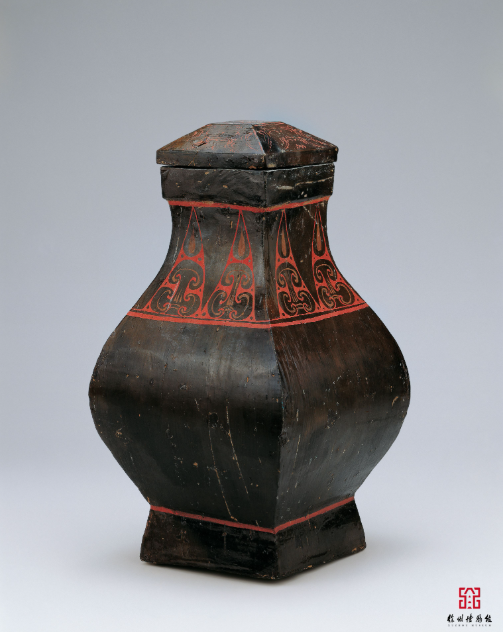
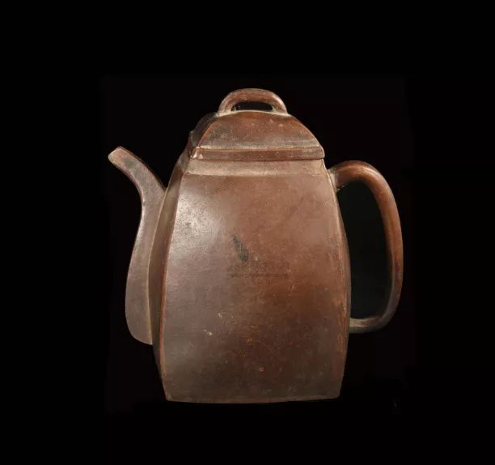
礼器方制
方口、束颈、鼓腹、覆斗形盖，这些属于汉代礼器的结构特征，在紫砂汉方壶中被重新组合。方中寓圆的处理，让庄重礼制与案头温润得以同时成立。
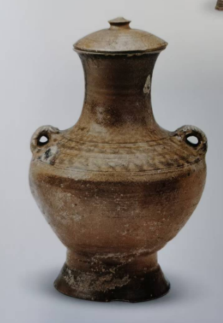
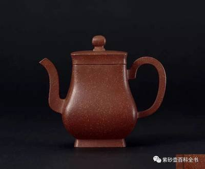
日用升华
徐州出土的盘口瓶、长颈瓶与蒜头瓶，为紫砂“汉缾”提供了丰富的轮廓基础。页面在这一组里强调的不是装饰繁复，而是汉代日用器皿经过提炼后留下的流畅块面与生命张力。
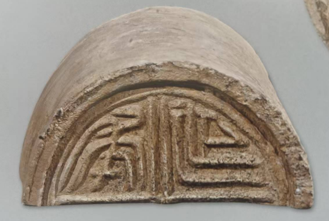
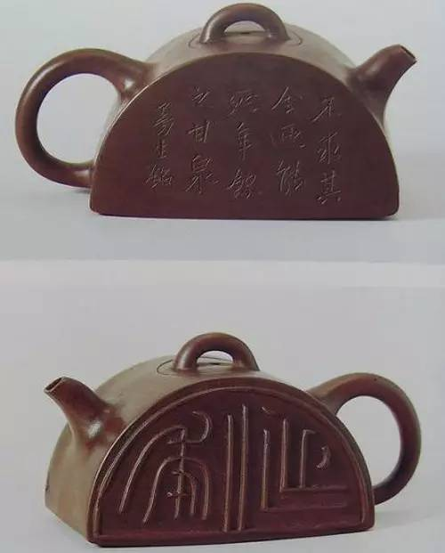
建筑入器
这是整份文档里最适合做官宣记忆点的一组。汉代建筑构件并未停留在平面图样，而是以半圆造型、吉语文字与留白哲思，被浓缩成一件最具辨识度的紫砂器形。
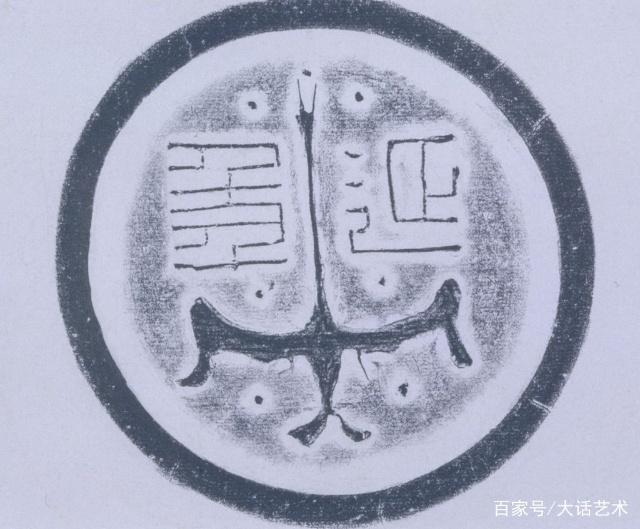
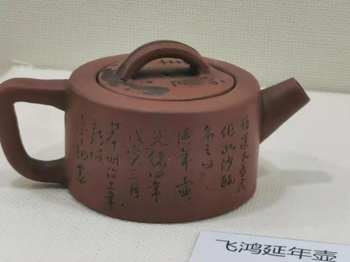
铭文与图像
文字瓦当里的吉祥愿望，与飞鸿图像中的轻盈气象，在紫砂壶上完成了新的叙事结合。它既是对汉代图像母题的转译，也是将祝福、时间感与文化意味一起放入茶事现场。
Form Showcase
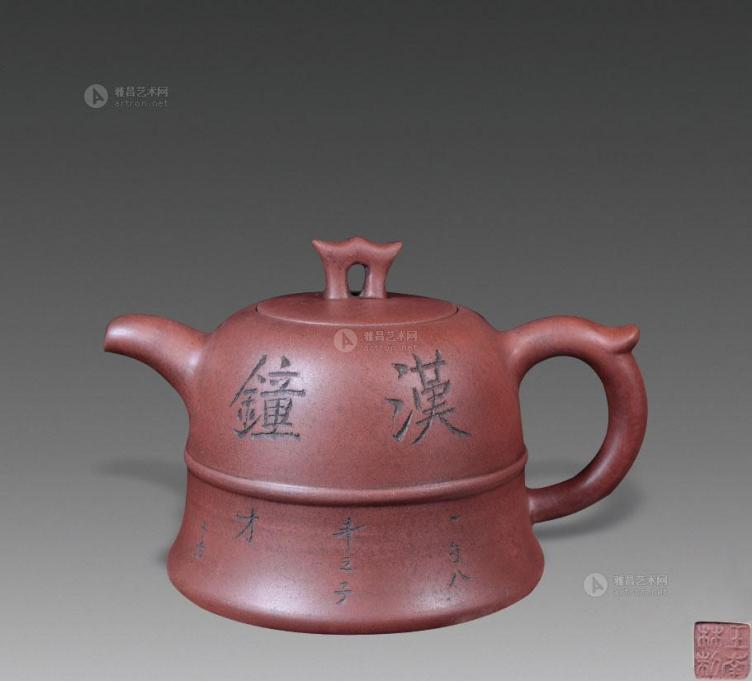
钟形表达
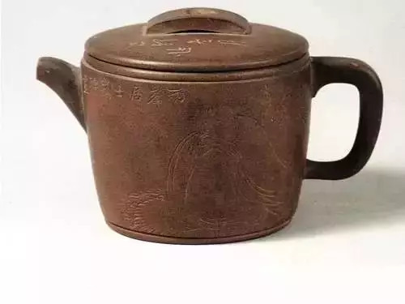
瓦当表达
半瓦表达
铭意表达
Philosophy
天圆地方
壶身象地，流把与盖钮象天。页面用方整框架与弧线细节并置，回应汉代宇宙观在器物中的物化表达。
中庸和谐
汉代审美推崇秩序、平衡与分寸感。器形因此不求炫技，而追求重心安稳、虚实协调、整体生动。
曲则全
半瓦壶最能代表这层辩证思维。留白、不对称、以退为进，让器物获得比形式完整更高的精神完成度。